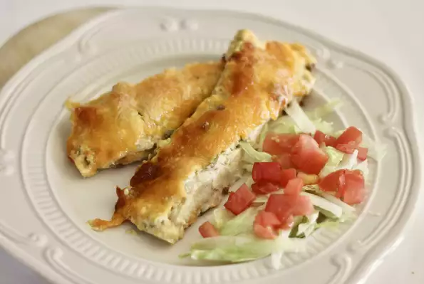

Iowa Enchiladas

Description
Easy ground beef enchiladas that can please a crowd. They travel to potlucks well and also freeze well. My family loves these!
Ingredients
- 2 pounds ground beef
- 1 onion, chopped
- 2 (4 ounce) cans chopped green chilies
- 1 (1 ounce) package taco seasoning
- 1 (16 ounce) container sour cream
- 2 (10.5 ounce) cans cream of chicken soup
- 12 flour tortillas
- 2 cups shredded Cheddar cheese
- 1 small tomato, chopped
- 1.5 cups shredded lettuce
- .25 cup black olives, sliced
Steps
- Preheat oven to 350 degrees F (175 degrees C).
- Cook and stir ground beef, onion, 1 can green chiles, and taco seasoning in a large skillet over medium-high heat until meat is browned, 6 to 8 minutes. Drain excess fat.
- Stir together sour cream, cream of chicken soup, and 1 can green chiles in a saucepan over medium-low heat until warm, about 10 minutes.
- Pour about half of warmed sour cream mixture into a 9x13-inch baking dish.
- Spoon ground beef mixture in the center of a tortilla. Roll tortillas and place on top of sour cream mixture in the 9x13-inch baking dish. Pour remaining sour cream mixture over tortillas and top with Cheddar cheese.
- Bake in the preheated oven until hot and bubbling, about 35 minutes.
- Top enchiladas with lettuce, tomatoes, olives.